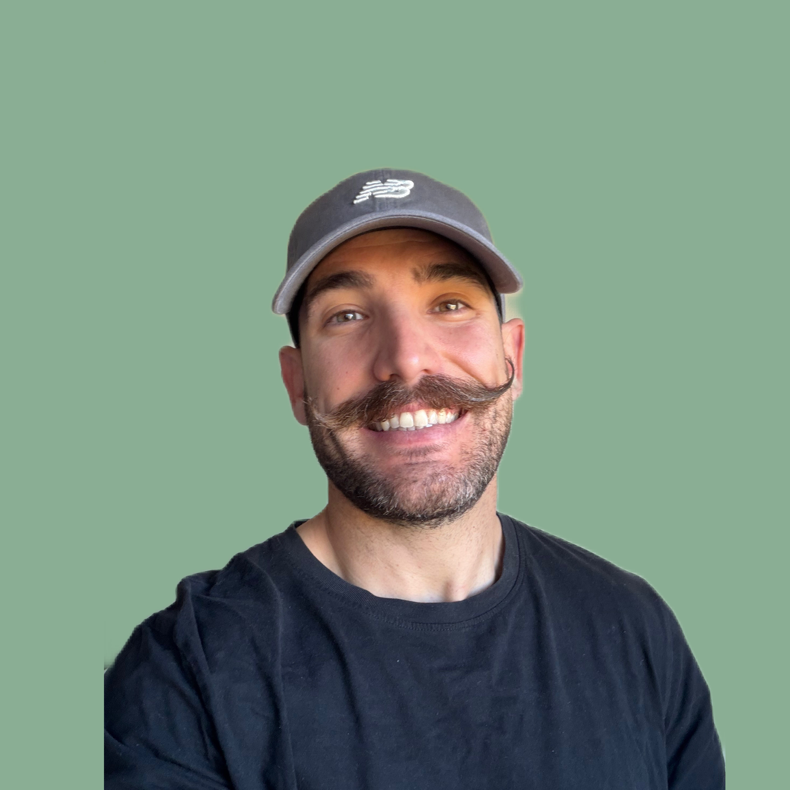

Conectando a productores con consumidores de forma directa
Sin intermediarios, sin etiquetas, sin códigos de barras
Desde el origen, para la comunidad, en tu territorio.
¿Por qué Tierra & Abasto?
La TIERRA es aquello que nos une, ese punto en común donde ganaderos, agriculotores y artesanos trabajan en sinergía para sacar el mejor producto posible.
El ABASTO está compuesto por todos aquellos productos y suministros básicos que nos son necesarios en nuestro día a día, nuestra alimentación, nuestra salud y nuestra economía
¿Quiénes somos?

Pablo
Encargado del mantenimiento y creación tecnológica de T&A, crítico en el sector económico del movimiento.
La parte protagonista de T&A, mantiene el proyecto conectado con el mundo rural. Especializado en la Agricultura y Ganadería Regenerativa.
Somos un grupo de amigos con creencias rurales que pensamos que el problema no viene de la escasez de recursos o necesidades, sino de la falta de conciencia, conexión, enfoque y herramientas disponibles hoy en día.
Cada día que pasa vemos cómo quien produce trabaja cada vez más y gana cada vez menos.
Y cómo quien consume lo hace bajando su calidad y subiendo su coste de manera innecesaria
¿Cuál es el problema?
El mundo rural está cada vez mas asfixiado:
Competencial desleal.
Burocracia infinita.
Entrada masiva de productos extranjeros.
Diferencias abísmales entre el precio de origen y final.
Nuestra tierra deja de ser rentable para convertirse en un castigo que cae en los productores, los cuales no desean este futuro para sus descendientes, rompiendo así, una cadena de saberes y valores incalculables que se quedan en el camino.
Las grandes empresas y fondos ven una oportunidad única en la que priman, exclusivamente, los números, frente al campesino que defiende costumbres, tradiciones, territorio, comunidad… ¿Te suena?
Nuestro objetivo
Queremos crear un espacio común donde:
Los productores y artesanos tenga voz y visibilidad.
Los consumidores puedan conectar directamente con el origen.
Se compartan ideas, problemas, propuestas y soluciones.
Se pongan medios herramientas y tecnología al servicio de las personas.
Es un lugar donde podrás encontrar productos directamente desde su origen,
cuidados con la máxima calidad y cariño por las personas productoras,
aquellas que no quieren estar pensando en un código creado por un sistema
de intermediarios donde el valor y la calidad del mismo se va derramando por cada proceso que pasa